Visão geral
O Roster Work é o sistema de escala de serviço da corporação. Esta visão geral mostra, de cima, como as peças se encaixam; o detalhe de cada uma fica na sua seção.
A escala (o coração)
Para cada dia, a escala responde a quatro coisas: quem trabalha, quando (o horário), onde (o posto) e em que função. O sistema separa isso em duas perguntas:
1) Quem está de serviço (o ciclo). Cada unidade tem um ritmo, por exemplo 24/48 (trabalha 24 horas e folga 48). Os militares rodam nesse ritmo, então a cada dia o sistema já sabe quem está de serviço. O ritmo é da unidade (fica em Ajustes), não é escolhido dia a dia.
2) Onde cada um fica (a distribuição). Sabendo quem está de serviço, o sistema coloca cada militar no seu lugar: em qual posto ou viatura e em qual função.
Primeiro o sistema sabe quem está de serviço, depois coloca cada um no seu lugar.
O que muda a escala
Depois da escala automática pronta, quatro coisas mexem nela por cima:
- Troca. Um militar passa o serviço (ou parte dele) para outro. Na escala, quem saiu fica riscado e quem entrou toma o lugar. Passa por aprovação.
- Folga. O militar tira um dia (ou um trecho) de serviço, então sai da escala naquele período. É um banco de horas: o saldo sobe quando trabalha a mais e desce quando folga. Passa por aprovação.
- Extrajornada. O estado paga o militar para trabalhar horas a mais; esse serviço entra na escala como extra. É um sistema separado da folga.
- Afastamento. Férias, licenças e dispensas tiram o militar da escala pelos dias do afastamento.
O que a escala precisa por baixo
Para o sistema montar a escala sozinho, três coisas precisam estar prontas antes:
- O efetivo (as pessoas). Os militares cadastrados, cada um com seus dados (grau, lotação, CNH, antiguidade). Sem efetivo, não há quem escalar. Fica em Usuários.
- Os postos e viaturas (onde servem). Os lugares de serviço: instalações (locais fixos, como a Central de Operações) e viaturas (que exigem CNH e podem entrar em manutenção). Cada posto tem uma guarnição (quantos militares). Fica em Postos.
- Os modelos e regras (o gabarito). O administrador monta, por unidade, um modelo que diz quais funções e vagas existem no dia; a distribuição segue esse gabarito. As regras ajustam quem pode ou não ir para certas funções. Fica em Distribuição.
Quem faz o quê
- O militar (usuário comum). Consulta a sua escala, pede trocas e folgas, declara disponibilidade de extrajornada e vê os seus avisos. Ele participa e solicita, não monta nem edita a escala.
- O administrador. Cadastra o efetivo e os postos, monta os modelos e a escala, aprova os pedidos (trocas, folgas, correções), lança extrajornada, registra afastamentos e atos de carreira. Ele monta e mantém o sistema.
O administrador também é um militar: faz as próprias solicitações como usuário e aprova como administrador, sem trocar de modo. Só não aprova o próprio pedido.
Primeiros passos
Entrar no sistema
Para usar o Roster Work, cada militar entra com o seu documento e a sua senha.

- CPF ou RG. Digite o seu documento. Pode ser o CPF (11 números) ou o RG (8 ou 9 números). O campo coloca os pontos e o traço sozinho.
- Senha. Digite a sua senha.
- Entrar. Clique no botão Entrar, ou aperte a tecla Enter.
- Atalhos. "Criar conta" abre o cadastro para quem ainda não tem acesso. "Esqueci minha senha" ajuda a definir uma senha nova.
Se algo estiver errado, o aviso aparece abaixo do campo: "Usuário não encontrado" quando o documento não está no sistema, ou "Senha incorreta" quando a senha não confere.
Já entrou antes? Enquanto a sua sessão estiver ativa, o sistema abre direto na tela inicial, sem pedir o login de novo.
A moldura: menu, unidades, tema e avisos
Depois de entrar, o sistema mostra sempre a mesma moldura em volta: o menu à esquerda, o cabeçalho no topo e a área de conteúdo no meio, que muda conforme a tela que você abre.
Menu (à esquerda). Lista as áreas do sistema. Clique numa para abri-la, e a área aberta fica destacada.


No pé do menu, o botão "Recolher menu" encolhe a barra para sobrar espaço. Recolhida, aparece só o ícone, e o nome surge ao passar o mouse. Essa escolha fica salva para os próximos logins.

Além das áreas comuns, o administrador tem o Histórico (auditoria). As áreas de gestão (Postos, Distribuição, Usuários e Ajustes) o usuário comum também abre, mas só para consulta; as ações de administrador ficam escondidas para ele. O item Programador aparece só para a equipe de programação.
Seletor de unidades (ao lado do logo). É ele que decide quais unidades aparecem nas telas (Escala, Usuários e outras). Clique para abrir a árvore, marque as unidades que quer ver (1) e clique em Aplicar (2).

Começa na sua lotação. Quem é do comando vê a companhia e os pelotões; quem é de um pelotão vê a companhia e o próprio pelotão. A escolha vale só naquela sessão: no próximo login, volta ao padrão.
O canto direito do cabeçalho. Reúne três atalhos:

- Tema. O botão de sol e lua alterna entre o tema claro e o escuro. A sua escolha fica salva.
- Sino de avisos. Mostra as suas notificações (o que aconteceu com você: uma troca para confirmar, uma folga decidida, uma correção aprovada). As não lidas ficam em negrito, e o número conta só as não lidas. Dá para "Marcar todas como lidas" ou abrir "Ver todos". Clicar numa notificação leva direto à tela do assunto.
- Menu do canto (seu nome). Abre Meu perfil, Fale conosco, Manual e Sair.
Meu perfil
É a sua página pessoal. Abre pelo menu do canto (seu nome) em "Meu perfil", e tem três abas: Perfil, Meus dados e Segurança.

Perfil (1). Mostra o seu cartão de identificação (grau, nome de guerra, lotação e o papel, Usuário ou Administrador) e os seus dados em leitura, separados em Identificação e Carreira. No fim, em Preferências, você troca o Tema, claro ou escuro, que muda na hora.
Meus dados (2). É onde você pede uma correção nos seus dados. Um aviso no topo lembra a regra: toda alteração passa pela aprovação do administrador.

Altere os campos que precisar. O campo mexido fica destacado e aparece um contador ("1 alteração a enviar"). Depois, clique em Solicitar correção para enviar tudo num pedido só, ou em Desfazer para voltar ao que estava.

Como funciona a aprovação: você só solicita; o pedido fica pendente até um administrador aprovar. Vale para todos os dados, inclusive celular, email e CNH. Abaixo do formulário, em "Minhas solicitações", você acompanha cada pedido pelo status: Pendente, Aprovada ou Recusada. O CPF não entra (é o seu login), e grau e lotação também não (mudam só por promoção ou transferência).
Segurança (3). Aqui você troca a sua senha: digite a senha atual, a nova (ao menos 6 caracteres e diferente da atual) e confirme. A senha muda na hora, sem precisar de aprovação.

A árvore de unidades
Algumas telas organizam a informação numa árvore de unidades: a sua corporação em hierarquia (companhia, pelotão, e assim por diante). Você a encontra, por exemplo, em Trocas (aba Todas), Usuários e Postos.
Como ela se monta. A árvore mostra só as unidades que você marcou no seletor de unidades (no topo da tela). As unidades acima delas aparecem como títulos, que situam a lista, e o conteúdo daquela tela (os militares, as trocas, as instalações…) aparece dentro da unidade marcada, com uma contagem ao lado. Os títulos grudam no topo enquanto você rola, então você sempre sabe em qual unidade está.
Mostrar mais ou menos níveis. No canto superior direito da lista há dois botões, Mais títulos e Menos títulos (o nome aparece ao passar o mouse). Eles mostram mais ou menos níveis do topo da hierarquia: Menos títulos encolhe (esconde os níveis mais altos e deixa a lista mais curta e direta) e Mais títulos os traz de volta. Há um limite: a árvore nunca esconde a unidade que você marcou nem o nível logo acima dela, e ao chegar nesse limite o botão fica desativado.
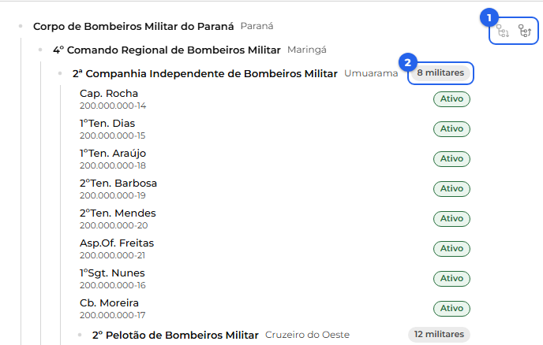
O dia a dia do militar
Ver o meu serviço
Você tem duas telas para ver quando e onde trabalha: o Início (um resumo rápido) e a Escala (a visão completa).
O Início (resumo rápido). Assim que você entra, o Início mostra o seu Próximo serviço (quando, horário, função e posto), além das horas da semana, do saldo de folgas, da próxima extra e das próximas férias.
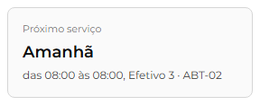
A Escala (visão completa). A página Escala mostra a escala da unidade, dia a dia. Para achar alguém rápido, use a busca "Pesquisar militar" e digite um nome (também vale CPF ou RG). A busca tem dois modos, no botão ao lado do campo: Marcar (o padrão), que realça o militar na grade mantendo os demais visíveis, e Filtrar, que mostra só quem você procurou.
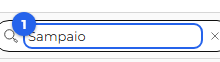
Os dias de serviço do militar ficam destacados na grade, com o horário e o posto. O espaçamento entre eles segue o ritmo configurado para a unidade, como o 24/48, e pode variar de uma unidade para outra.
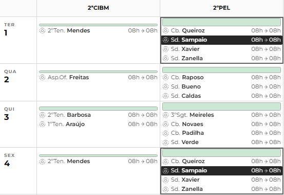
A Escala tem outros modos de ver além do Mês (Semana, Colunas, Dia e Militares). Todos mostram a mesma escala, de jeitos diferentes; use o que for melhor para você.
Solicitar uma troca
Uma troca é quando você pede que outro militar cubra um serviço seu. Pode ser o turno inteiro ou apenas um período de horas dele, e você pode marcar uma devolução (um dia do colega que você cobre em retorno) ou deixar essa devolução para depois.
Como pedir. Na página Trocas, clique em "Solicitar troca". Abre um painel com dois blocos:
- Solicitante (você): escolha o dia do serviço que quer passar e, no período, mantenha o turno inteiro ou marque só as horas que quer trocar.
- Solicitado: escolha a unidade e o militar que vai cobrir. A lista traz apenas quem está livre naquele dia. Em Devolução, deixe em Pendência (você fica devendo o serviço, para acertar mais tarde) ou escolha Marcar dia (aponte um dia do colega e o período que você cobre em troca).
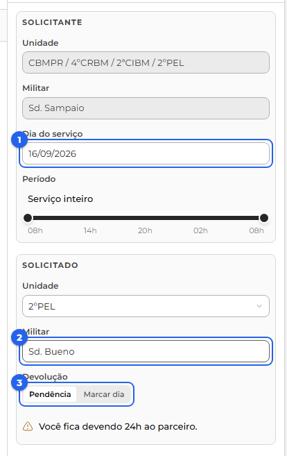
Ao confirmar, a troca nasce como "Aguardando confirmação" e segue para o militar que você escolheu.
Quando pedem uma troca a você. O pedido aparece na aba Minhas e nos seus avisos. Ao abrir a troca, um painel mostra quem troca, o dia, o horário e a devolução, junto de uma análise do impacto na escala. No rodapé, você Aceita ou Recusa: aceitando, a troca segue para a aprovação de um administrador; recusando, ela se encerra.
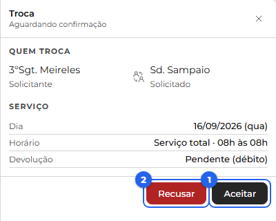
Acompanhar as suas trocas. A página Trocas tem três abas: Todas (as trocas da sua unidade), Minhas (as que você participa, como solicitante ou solicitado) e Pendentes (as devoluções em aberto). Cada troca traz um selo com a situação: Aguardando confirmação, Aguardando aprovação, Aprovada, Recusada, Rejeitada ou Cancelada.
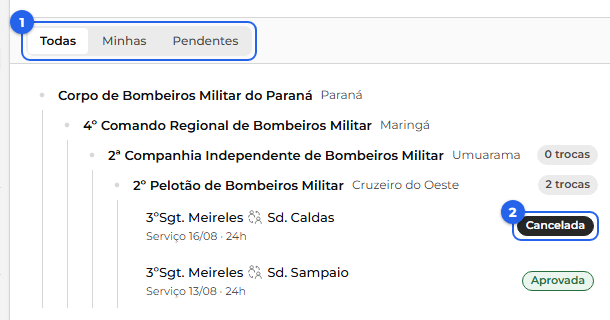
Cancelar a sua solicitação. Enquanto a troca está aguardando (confirmação ou aprovação), você pode abri-la e usar Cancelar troca. Depois de aprovada, apenas um administrador pode desfazê-la.
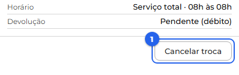
A troca aprovada na escala. Depois da aprovação do administrador, a troca passa a valer na escala. No dia trocado, o militar que passou o serviço aparece riscado e quem assumiu entra no lugar, os dois com o ícone de troca. Havendo devolução, o mesmo acontece no dia dela, com os papéis invertidos.
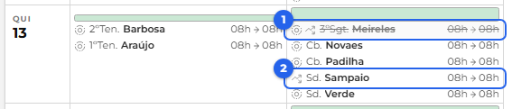
Devolução e pendências. Quando você marca a devolução, com o dia e o período do colega, as duas datas ficam casadas e ninguém fica devendo. Se a devolução tiver duração diferente do serviço, ou se você a deixar em Pendência, a diferença vira uma dívida de horas: quem passou o serviço fica devendo a quem cobriu. A aba Pendentes reúne essas dívidas, você vê as que envolvem você e o administrador vê todas.
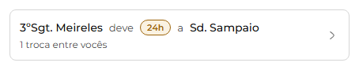
Ver o histórico e cobrar. Clique num card para abrir, à direita, o histórico entre vocês dois: cada troca vira uma linha com a data, quem folgou e quem trabalhou e as horas, para você ver de onde o saldo veio. Um Ver mais traz as trocas mais antigas. Nesse painel, quem tem horas a receber usa o botão Cobrar: ele abre o Solicitar troca já apontado para quem deve, com as horas da dívida prontas na barra do serviço. Você só escolhe qual dia seu o colega vai cobrir e confirma, e quando a troca é aprovada, a dívida é acertada.
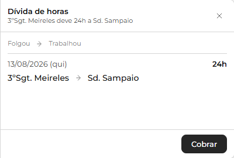
Solicitar uma folga
Tirar uma folga é deixar de fazer um serviço que já está escalado para você, descontando as horas desse serviço do seu banco de horas de folga. É um sistema separado da Extrajornada (que é hora paga pelo estado); as horas daqui não são hora extra.
O seu saldo. O saldo é o seu banco de horas: ele sobe quando você trabalha a mais (um serviço além do seu ciclo, ou um ajuste do gestor) e desce quando você tira folga. Pode ficar negativo (você fica devendo horas), e o sistema avisa na hora de pedir. Um pedido em aberto não mexe no saldo até ser aprovado.
Como pedir. Na página Folgas, aba Minhas folgas, o botão "Solicitar folga" abre um painel. Escolha um dia em que você está de serviço e o período (o turno inteiro ou um trecho), e pode escrever um motivo. As horas do serviço saem do seu saldo, e o pedido nasce como "Solicitada".
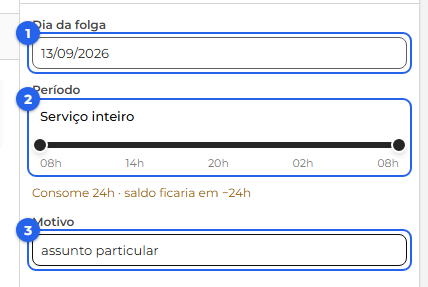
Aprovação e escala. Um administrador Aprova ou Recusa. Aprovada, a folga passa a valer: na escala, no dia da folga, você aparece riscado e as horas são descontadas do saldo. Recusada, encerra.
Acompanhar e cancelar. A aba Minhas folgas reúne o seu saldo em destaque, os pedidos em aberto e o seu extrato (os lançamentos que sobem e descem o saldo), cada um com a sua situação. Enquanto o pedido está Solicitada, você pode cancelá-lo no botão ✕ ao lado dele; depois de aprovado, o cancelamento fica com o administrador.
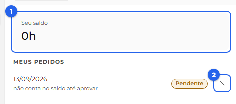
Declarar disponibilidade de extrajornada
A extrajornada é a hora extra paga: o estado paga em dinheiro para o militar trabalhar horas a mais. Ela é organizada em cotas (cada cota vale 6 horas) e é um sistema separado das Folgas. Na página Extrajornada, aba Disponibilidade, você preenche a sua declaração, mês a mês: se quer participar, quantas cotas quer e em quais dias.
Sou voluntário. Só o voluntário recebe extrajornada, então o primeiro passo é responder "Sou voluntário". Em Não, a declaração termina aí. Em Sim, aparecem as cotas e as datas para você preencher.
Quantas cotas você quer. Escolha quantas cotas deseja no mês, de 1 a 8 (de 6 a 48 horas). O botão "Fechar blocos de 24 h" é para quem só aceita turnos inteiros: ligando ele, as cotas ficam em 4 (um turno de 24 horas) ou 8 (dois turnos).
Marcar os dias. No calendário, cada clique num dia alterna entre Quero (verde), Não quero (vermelho) e neutro (branco). Eles se organizam em duas listas, Datas que quero e Datas que não quero, e você marca de 5 a 10 datas em cada uma (o mínimo de 5 diminui se você tiver poucos dias livres no mês). Cada lista mostra um contador, e um aviso indica quantas datas ainda faltam.
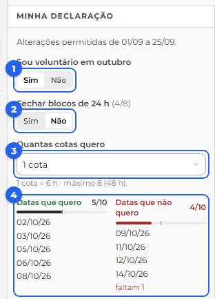
Dias em que você já está ocupado. Um dia em que você já tem serviço, troca, folga, férias, licença ou atestado fica apagado e não pode ser marcado, com o motivo escrito na própria data.
Quantos querem cada dia. No canto de cada dia aparece quantos voluntários querem aquele dia, para você enxergar os mais e os menos procurados. No alto da tela, um seletor escolhe de qual grupo é essa contagem: a sua unidade, a companhia inteira ou outro pelotão.
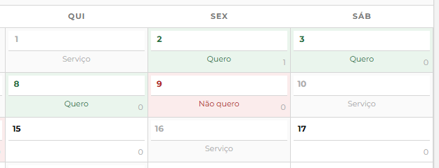
O prazo. Você declara sempre a disponibilidade do mês seguinte, e só até o dia 25 do mês atual. Um aviso no topo da declaração mostra o estado: as datas em que as alterações são permitidas, ou, quando o prazo fecha, quando a próxima declaração abre. Fora do prazo, você ainda vê a sua declaração, mas não pode mudá-la.
Meses anteriores. Você pode voltar aos meses passados, só para ver. Num mês em que foi voluntário, aparece um resumo do que você recebeu: o total de cotas e cada data com quatro bolinhas, uma para cada bloco de 6 horas. Num mês em que não foi voluntário, o sistema apenas informa isso.
Os meus avisos
O sistema te mantém informado pelo sino, no alto da tela, à direita. O número sobre o sino conta os avisos em aberto (não é a quantidade de não lidos). Clicando nele, abre uma lista com os seus avisos.
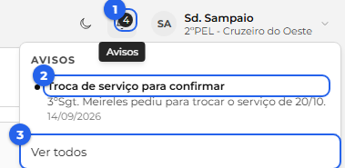
Ler e resolver. Um aviso que só informa (por exemplo, "Troca aprovada") sai da lista quando você o lê. Um aviso que pede uma ação sua (como uma troca esperando a sua confirmação) fica na lista até o assunto ser resolvido, mesmo que você já o tenha visto. Clicar num aviso leva direto para a tela do assunto. Há também o "Marcar todas como lidas", que limpa de uma vez os avisos que só informam, e o "Ver todos", que abre a página Avisos.
O que chega para você. Os avisos acompanham o que acontece com as suas trocas, folgas e dados:
- Trocas: "Troca de serviço para confirmar" (quando um colega pede que você cubra o serviço dele), "Troca aprovada", "Troca recusada", "Troca negada pela administração" e "Troca cancelada".
- Folgas: "Folga aprovada", "Folga recusada", "Folga cancelada", "Folga concedida" (quando o gestor concede uma folga direto para você) e "Saldo de folgas ajustado".
- Dados: quando o gestor decide uma correção de dados que você pediu.
A página Avisos. O "Ver todos" abre a página Avisos, com duas abas. Em Para mim, no topo aparece o "Precisa de você" (o que espera uma ação sua, como uma troca a confirmar) e, abaixo, o histórico de tudo que já aconteceu com você. Em Comunicados ficam os avisos gerais que a administração publica para toda a unidade, e que você lê.
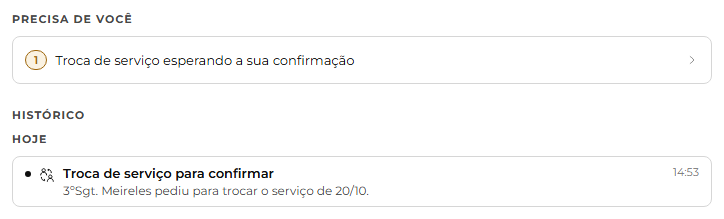
Montando o sistema Apenas administradores
Você precisa ser administrador para as ações desta parte.
Cadastrar o efetivo
Em construção.
Postos de serviço (instalações e viaturas)
Em construção.
Distribuição: modelos e regras
Em construção.
A Escala: montar o ciclo
Em construção.
Gerindo o dia a dia Apenas administradores
Você precisa ser administrador para as ações desta parte.
Aprovar trocas, folgas e correções
Em construção.
Afastamentos (férias, licenças, dispensas)
Em construção.
Extrajornada: cotas e montar a escala
Em construção.
Atos de carreira e o efeito na escala
Em construção.
Ajustes de ritmo das unidades
Em construção.
Acompanhamento
Avisos e comunicados
Em construção.
Histórico Apenas administradores
Em construção.
Legenda de ícones e selos
Aqui ficam reunidos os ícones e as cores que aparecem pelo sistema, para você consultar quando bater a dúvida.
Os ícones da Escala
Na Escala, à esquerda de cada nome, um ícone mostra de onde o militar veio naquele dia:
- Escala base. Marca onde o militar entrou no ciclo: o ponto em que um administrador o inseriu para começar na escala base.
- Gerado pelo sistema. Os dias que o sistema projetou sozinho a partir daquela entrada, seguindo o ciclo da unidade.
- Inserção pontual. O militar foi colocado só naquele dia, fora do ciclo normal.
- Troca. O militar está ali por uma troca, cobrindo um colega.
- Folga. O militar está de folga naquele dia.
- Extrajornada. O militar está numa hora extra paga.
- Cadeado. O único que não fala do dia: indica que a função daquele militar foi definida à mão pelo administrador e, por isso, não muda quando o sistema recalcula. Aparece junto de outro ícone de origem.
Nome riscado. Quando o nome aparece riscado, como em 3ºSgt. Meireles, é porque o militar saiu daquele serviço, por folga ou por troca. Nesse caso aparecem dois ícones: o da origem dele no dia e o marcador de folga ou de troca.
Cores e selos de situação
As cores seguem sempre a mesma ideia no sistema todo:
- Aprovada Verde. Tudo certo: aprovado, ativo, sem problema.
- Pendente Amarelo. Atenção: algo pendente ou uma ressalva a conferir.
- Recusada Vermelho. Problema: um erro, um conflito ou algo recusado.
- Cancelada Cinza. Encerrado sem efeito, como algo cancelado.
Os selos são essas etiquetas coloridas que resumem a situação de um item. Os mais comuns são Ativo, Pendente, Aprovada, Recusada (ou Rejeitada) e Cancelada.
Apêndice: a lógica por trás
Em construção. As regras que o sistema aplica sozinho: Chefe de Socorro e Oficial de Área (mais antigos), CNH do condutor, acúmulos e antiguidade.